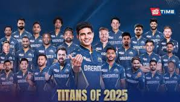

Gujarat Titans
2022 champions with rapid success
About Gujarat Titans

City: Ahmedabad, Gujarat
Home Ground: Narendra Modi Stadium
Captain (2025): Shubman Gill
Owners: CVC Capital Partners
Established: 2022
Gujarat Titans made an instant impact in the IPL, winning the title in their debut season under Hardik Pandya.
[](https://www.iplt20.com/teams)Records and Achievements
IPL Titles
1 (2022)
Playoff Appearances
2
Notable Record
Lowest team total defended: 130 vs Delhi Capitals (2022)
Key Player Stat
Shubman Gill: Highest runs in a season for GT (890 in 2023)
2025 Highlight
Top of points table with 8 points and +1.081 NRR after 6 games.
[](https://www.hindustantimes.com/cricket/ipl/points-table)